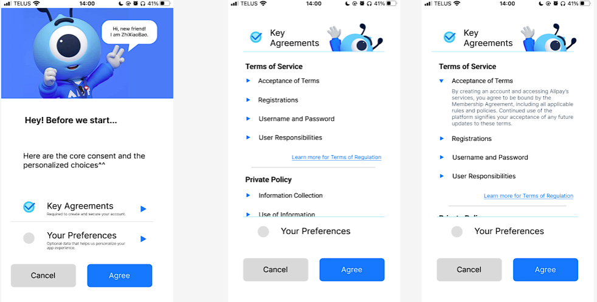
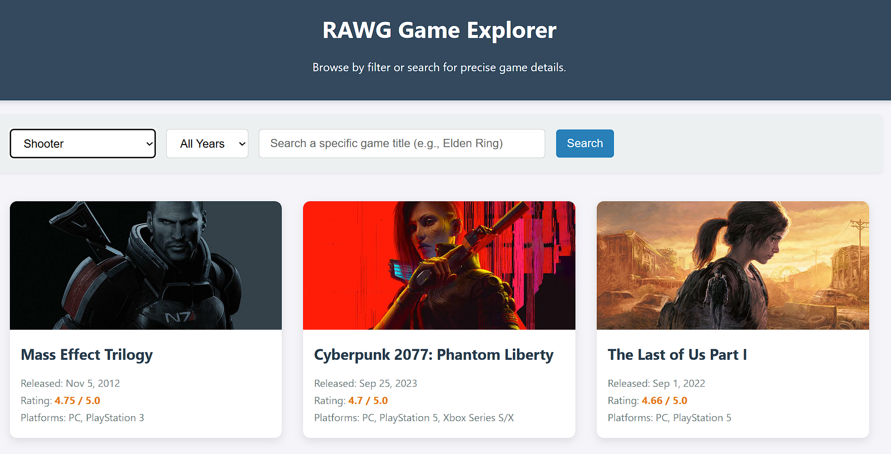

My Selected Work

Portfolio 1: Transparency Design for AliPay
Improving users' right to know about the use of their personal information.
View Detail →

Portfolio 2: Build up a Website using Third-Party API
This is a game info website where you can search for details or browse endlessly.
View Detail →